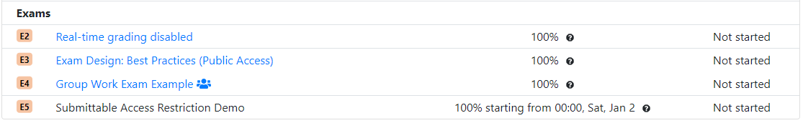

Thanks to great work by Eugene Chau, a student in the University of British Columbia, it is now possible to allow students to see, in the course homepage, a list of future assessments, before they are made active. This list allows students to plan ahead for future assessments, as it includes the release date, but students are unable to see the assessment questions or to submit any work.
The same feature can also be used to allow students to see their completed assessments for review after the deadline has passed. Students can review the questions, their answers and their scores, but are unable to submit any further answers. Students that had not yet started the assessment by this time are unable to view the assessment questions at all.
You can set up your assessments to be visible, but not active, by creating a new access rule with
the active setting set to false. For students that have not yet started
the assessment, this will allow them to see it listed on the course homepage, but will prevent
them from starting a new instance of the assessment. For students that have already started the
assessment, this will allow them to see the assessment questions and previously submitted answers,
but not to submit new ones.
"allowAccess": [
{
"startDate": "2015-02-16T00:00:01",
"endDate": "2015-02-16T23:59:59",
"timeLimitMin": 50,
"credit": 100
},
{
"startDate": "2015-01-01T00:00:01",
"endDate": "2015-05-15T23:59:59",
"active": false
}
]
For more information, see the documentation.